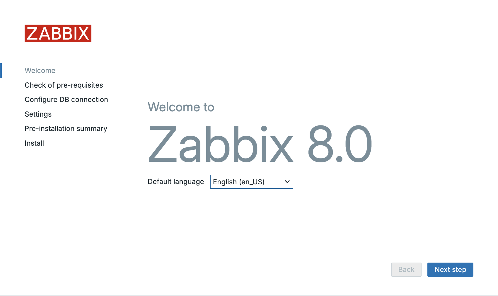
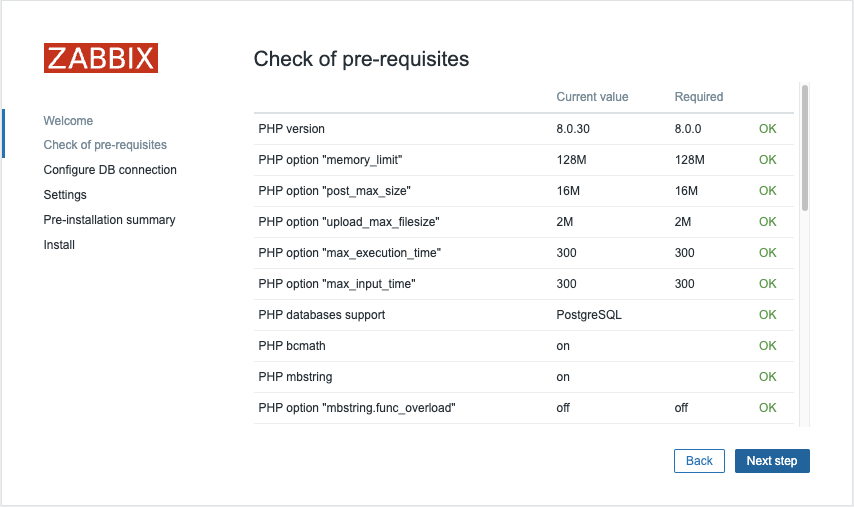
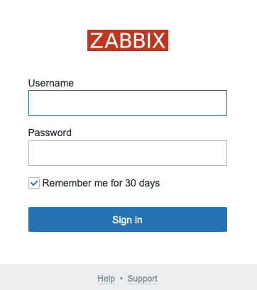

Installing the frontend
Before configuring the Zabbix frontend, ensure the system meets the requirements and is prepared as outlined in the previous chapter: Getting started. This server can be the same one where the Zabbix server packages were previously installed, or it can be a separate machine.
Perform all subsequent steps on the server designated for the frontend.
Installing the frontend with NGINX
install frontend packages
Red Hat
# When using MySQL/MariaDB
dnf install zabbix-nginx-conf zabbix-web-mysql
# or when using PostgreSQL
dnf install zabbix-nginx-conf zabbix-web-pgsql
# When using MySQL/MariaDB
zypper install zabbix-nginx-conf zabbix-web-mysql php8-openssl php8-xmlreader php8-xmlwriter
# or when using PostgreSQL
zypper install zabbix-nginx-conf zabbix-web-pgsql php8-openssl php8-xmlreader php8-xmlwriter
Suse Linux Enterprise Server
On SUSE Linux Enterprise Server (SLES), ensure you are subscribed to the
"SUSE Linux Enterprise Module Web and Scripting" repository to access
the necessary PHP 8 packages required for the Zabbix frontend installation:
(on SLES versions < 16, the command is "SUSEConnect" instead of "suseconnect")
Ubuntu
This command will install the front-end packages along with the required dependencies for Nginx.
As of SUSE 16 SELinux is now the default security module instead of AppArmor. By default PHP-FPM is not allowed by SELinux on SUSE to - map exec memory required for PHP JIT compilation, - connect to Zabbix server or - connect to the database server over TCP. We need to tell SELinux to allow all this:
SELinux: Allow PHP-FPM to map exec memory
Tip
To troubleshoot SELinux issues, it is recommended to install the setroubleshoot
package which will log any SELinux denials in the system log and provide
suggestions on how to resolve them.
Depending on your Linux distribution defaults, PHP-FPM may by default not be
allowed by SystemD to write to the /etc/zabbix/web directory required for the
Zabbix frontend setup. To enable this we need to create a drop-in file to allow this:
SystemD: Allow PHP-FPM to write to /etc/zabbix/web
This will open an editor to create a drop-in file /etc/systemd/system/php-fpm.service.d/override.conf
which will override or extend the existing service file.
Add the following lines to the file:
Then exit the editor and reload the SystemD configuration:
How is SystemD preventing PHP-FPM from writing to /etc/zabbix/web?
On many modern Linux distributions, SystemD employs a security feature known as
sandboxing to restrict the capabilities of services. This is done to enhance
security by limiting the access of services to only the resources they need to function.
By default, PHP-FPM may be restricted from writing to certain directories,
including /etc/zabbix/web, to prevent potential security vulnerabilities.
This is enforced through SystemD's ProtectSystem and ReadWritePaths directives, which
control the file system access of services.
Tip
Normally write access to /etc/zabbix/web is only needed during the initial setup
of the Zabbix frontend. After the setup is complete you can remove the drop-in
file again to further harden the security of your system.
First thing we have to do is alter the Nginx configuration file so that we don't use the standard config and serve the Zabbix frontend on port 80.
In this configuration file look for the following block that starts with server {:
Original config
Tip
This block may be different depending on your distribution and Nginx version.
Then, comment out the any listen and server_name directives to disable the default
http server configuration. You can do this by adding a # at the beginning of
each line, like in the example below:
The Zabbix configuration file must now be modified to take over the default service on port 80 we just disabled. Open the following file for editing:
And alter the following lines:
Original config
Remove the # in front of the first 2 lines and modify them with the correct
port and domain for your front-end.
Tip
In case you don't have a domain you can replace servername with _
like in the example below:
The web server and PHP-FPM service are now ready for activation and persistent startup. Execute the following commands to enable and start them immediately:
Restart the front-end services
Red Hat / SUSE
Ubuntu
Let's verify if the service is properly started and enabled so that it survives our reboot next time.
Example output
localhost:~> sudo systemctl status nginx
● nginx.service - The nginx HTTP and reverse proxy server
Loaded: loaded (/usr/lib/systemd/system/nginx.service; enabled; preset: disabled)
Drop-In: /usr/lib/systemd/system/nginx.service.d
└─php-fpm.conf
Active: active (running) since Mon 2023-11-20 11:42:18 CET; 30min ago
Main PID: 1206 (nginx)
Tasks: 2 (limit: 12344)
Memory: 4.8M
CPU: 38ms
CGroup: /system.slice/nginx.service
├─1206 "nginx: master process /usr/sbin/nginx"
└─1207 "nginx: worker process"
Nov 20 11:42:18 zabbix-srv systemd[1]: Starting The nginx HTTP and reverse proxy server...
Nov 20 11:42:18 zabbix-srv nginx[1204]: nginx: the configuration file /etc/nginx/nginx.conf syntax is ok
Nov 20 11:42:18 zabbix-srv nginx[1204]: nginx: configuration file /etc/nginx/nginx.conf test is successful
Nov 20 11:42:18 zabbix-srv systemd[1]: Started The nginx HTTP and reverse proxy server.
With the service operational and configured for automatic startup, the final preparatory step involves adjusting the firewall to permit inbound HTTP traffic. Execute the following commands:
Configure the firewall
Red Hat / SUSE
Ubuntu
Open your browser and go to the url or ip of your front-end :
If all goes well you should be greeted with a Zabbix welcome page. In case you
have an error check the configuration again or have a look at the nginx log file
/var/log/nginx/error.log or run the following command :
This should help you in locating the errors you made.
Upon accessing the appropriate URL, a page resembling the one illustrated below should appear:

1.4 Zabbix welcome
The Zabbix frontend presents a limited array of available localizations, as shown.

!.5 Zabbix welcome language choice
What if we want to install Chinese as language or another language from the list? Run the next command to get a list of all locales available for your OS.
Install language packs
Red Hat
SUSE
Ubuntu
Users on Ubuntu will probably notice following error `"Locale for language "en_US" is not found on the web server."``
This can be solved easy with the following commands.
This will give you a list like:
Example output
Red Hat
Installed Packages
glibc-langpack-en.x86_64
Available Packages
glibc-langpack-aa.x86_64
---
glibc-langpack-zu.x86_64
SUSE
Ubuntu
language-pack-kab - translation updates for language Kabyle
language-pack-kab-base - translations for language Kabyle
language-pack-kn - translation updates for language Kannada
language-pack-kn-base - translations for language Kannada
---
language-pack-ko - translation updates for language Korean
language-pack-ko-base - translations for language Korean
language-pack-ku - translation updates for language Kurdish
language-pack-ku-base - translations for language Kurdish
language-pack-lt - translation updates for language Lithuanian
Let's search for our Chinese locale to see if it is available. As you can see the code starts with zh.
search for language pack
Red Hat
SUSE
Ubuntu
On RedHat and Ubuntu, the command outputs two lines; however, given the identified language code,
'zh_CN,' only the first package requires installation.
on SUSE either only locales C.UTF-8 and en_US.UTF-8 are install or all
available locales are installed, depending on whether the package glibc-locale
is installed or not.
Install the locale package
Red Hat
SUSE
Ubuntu
When we return now to our front-end we are able to select the Chinese language, after a reload of our browser.

1.6 Zabbix select language
Note
If your preferred language is not available in the Zabbix front-end, don't worry, it simply means that the translation is either incomplete or not yet available. Zabbix is an open-source project that relies on community contributions for translations, so you can help improve it by contributing your own translations.
Visit the translation page at https://translate.zabbix.com/ to assist with the translation efforts. Once your translation is complete and reviewed, it will be included in the next minor patch version of Zabbix. Your contributions help make Zabbix more accessible and improve the overall user experience for everyone.
When you're satisfied with the available translations, click Next. You will
then be taken to a screen to verify that all prerequisites are satisfied. If any
prerequisites are not fulfilled, address those issues first. However, if everything
is in order, you should be able to proceed by clicking Next.

1.7 Zabbix pre-requisites
On the next page, you'll configure the database connection parameters:
Select the Database Type: Choose either MySQL or PostgreSQL depending on your setup.Enter the Database Host: Provide the IP address or DNS name of your database server. Use port 3306 for MariaDB/MySQL or 5432 for PostgreSQL.Enter the Database Name: Specify the name of your database. In our case, it is zabbix. If you are using PostgreSQL, you will also need to provide the schema name, which is zabbix_server in our case.Enther the Database Schema: Only for PostgreSQL users, enter the schema name created for Zabbix server, which iszabbix_serverin our case.Enter the Database User: Input the database user created for the web front-end, remember in our basic installation guide we created 2 userszabbix-webandzabbix-srv. One for the frontend and the other one for our zabbix server so here we will use the userzabbix-web. Enter the corresponding password for this user.
Ensure that the Database TLS encryption option is not selected, and then click
Next step to proceed.

1.8 Zabbix connections
You're almost finished with the setup! The final steps involve:
Assigning an Instance Name: Choose a descriptive name for your Zabbix instance.Selecting the Timezone: Choose the timezone that matches your location or your preferred time zone for the Zabbix interface.Setting the Default Time Format: Select the default time format you prefer to use.- Encrypt connections from Web interface: I marked this box but you should not. This box is to encrypt communications between Zabbix frontend and your browser. We will cover this later. Once these settings are configured, you can complete the setup and proceed with any final configuration steps as needed.
Note
It's a good practice to set your Zabbix server to the UTC timezone, especially when managing systems across multiple timezones. Using UTC helps ensure consistency in time-sensitive actions and events, as the server’s timezone is often used for calculating and displaying time-related information.

1.9 Zabbix summary
After clicking Next step again, you'll be taken to a page confirming that the
configuration was successful. Click Finish to complete the setup process.

1.10 Zabbix install
We are now ready to login :

1.11 Zabbix login
- Login : Admin
- Password : zabbix
This concludes our topic on setting up the Zabbix server. If you're interested in securing your front-end, I recommend checking out the topic Securing Zabbix for additional guidance and best practices.
Tip
If you are not able to save your configuration at the end, make sure you
executed the SELinux related instructions or have SELinux disabled.
Also check if the /etc/zabbix/web directory is writable by the webservice
user (usually wwwrun or www)
Conclusion
With the installation and configuration of the Zabbix frontend now complete, you have successfully set up the user interface for your Zabbix monitoring system. This process included installing the necessary packages, configuring a web server and PHP engine, setting up the database connection, and customizing the frontend settings.
At this stage, your Zabbix instance is operational, providing the foundation for advanced monitoring and alerting. In the upcoming chapters, we will delve into fine-tuning Zabbix, optimizing performance, and exploring key features that transform it into a powerful observability platform.
Now that your Zabbix environment is up and running, let’s take it to the next level.